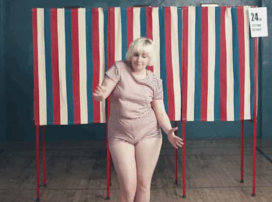
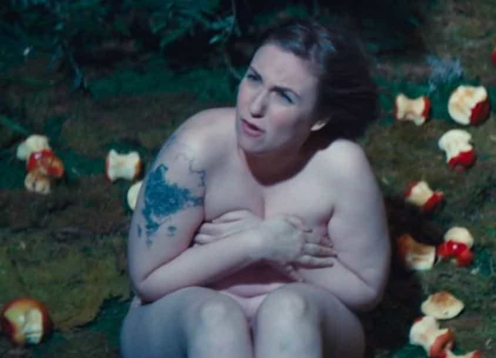

is an aspiring philosopher king, living the dream, travelling the world, hoarding FRNs and ignoring Americunts. He is a European at heart, lover of Latinas, and currently residing in the USA.


Dunham, born in 1986 (currently 29) is a stereotypical New York Jewish feminist working in media. In 2010 she wrote, directed, and starred in a biopic called Tiny Furniture, about a frumpy college graduate living at home, with a filmmaking degree who doesn’t know what to do with her life, suffering dating, job, and personal failures.
Monthly De-Licing Treatment
One day she meets up with one of her friend’s boyfriends in public, gets high, and then has unprotected sex inside a large pipe. Somehow, the film has become part of the Criterion Collection, which I thought was relegated to restoring and digitizing film classics like Rules of The Game and Stanley Kubrick’s Spartacus. The film is labeled a comedy, and stars Dunham’s real family.
Tiny Furniture earned a box office take of over $390,000, which was a financial success due to its $65,000 budget. However, it’s far from a blockbuster, and it’s inexplicable how this single short earned Dunham a blind script deal at HBO. Well, perhaps there is one explanation: HBO President Sue Naegle just wanted to greenlight a you-go-gurl project for its political message. Dunham created the HBO series Girls, which premiered in 2012, and earned four Emmy nominations.
Girls is currently in its 6th and final season. I used to wholeheartedly recommend that “Oh yeah, any series on HBO is top-notch” but this NSFH (not safe for home) clip makes me reconsider:
Don’t you wish your girlfriend was hot like me?
In 2014, a collection of essays titled “Not That Kind of Girl: A Young Woman Tells You What She’s ‘Learned” was published, with Dunham collecting a $3.5 million fee. Quite a nice income for a twentysomething with little real world experience, recounting her life of drug use, tattoos, anonymous unprotected sex, and, oh yeah, the obligatory college rape accusation.
Dunham falsely accused a man named “Barry” who she later made a bizarre apology to which claims that a “flamboyant Republican” classmate did rape her, but that she used a pseudonym to PROTECT this supposed rapist, instead of pointing him out to police and the public and protecting others from rape, although the pseudonym she chose does match an actual classmate named Barry who fits the description she gave of her rapist, but the two never even met. Confused yet?
During this period, she also admitted to sexually assaulting her baby sister, though there was very little media coverage of this admitted crime, likely due to her privileged status as a mainstream media insider.
Depiction of a left ovarian cyst
Recently Dunham revealed that she has a ruptured ovarian cyst. Women have only two ovaries, located on each side of the uterus. Ovaries produce estrogen, the main female sex hormone, and house all of the eggs that a woman carries with her, releasing one every month during menstruation. Damage to a single ovary means that half of a woman’s limited supply of eggs are eliminated, and can cause permanent hormone imbalances.
Dunham has a condition called endometriosis, which causes serious problems, including weight gain (just imagine), difficulty urinating, nausea, vomiting, scar tissue in the uterus, chemical and hormonal changes, loss of eggs, and almost half of all infertility cases. Large clumps of tissue like the one above, grow, ooze liquid, and bleed regularly with every menstrual cycle, causing excessive bleeding, pain during intercourse, bowel movements, or exercise. In Dunham’s case, her cyst ruptured, and she is undergoing emergency surgery to remove the ruptured cyst.
After college, I dated a girl in Chicago who had one shriveled up ovary. It was no coincidence that she was the most unfeminine, independent, feminist “I don’t need a man” career girl that I ever dated. I often thought about how surely there was a correlation between her bossy, unkind, selfish behavior and her shriveled up uterus. Indeed, there is a correlation, and there are many causes we can point to with Dunham.
Ovarian cysts are caused by many risk factors including age, obesity, smoking, not having children, not breastfeeding, hormone replacement therapy, and other hormonal or chemical use. Dunham fits almost every one.

Dunham will turn 30 this year, and the risk for reproductive problems increases with age.
Nuff Said.
In a People magazine interview, Dunham admits to smoking cigarettes. Her films and book also indicate drug use.
Peak fertility occurs in the early to mid 20s in women, with fertility declining rapidly at age 31-35. After 35, many women have difficulty conceiving without medical help. Dunham turns 30 later this year. Women’s bodies are built to reproduce, and the reason they have so many uncomfortable and otherwise useless body parts and functions as breasts, menstruation, and hormones which seriously affect their mood is all for one end: reproduction. By ignoring the biological drive to reproduce, a woman places herself in a higher risk category for ovarian cysts or even cancer.
Women who do reproduce in their prime fertility period should breastfeed. Not only is breastfeeding better for the baby, but it is better for the mother, and can actually help her avoid serious medical problems.
While I am unaware of any hormone replacement, Dunham admits to taking multiple psychotropic drugs and antidepressants, beginning at age 14, when her body was still developing. Any hormone or chemical usage increases her risk of ovarian cysts.

Dunham has been seeing mental health therapists since age 9, was diagnosed with obsessive-compulsive disorder, a mental illness according to the DSM-IV, at age 11, and describes her mental health by saying “I really love my life but I’ve kind of worn anxiety grooves into my brain. It just doesn’t always sound good in there.”
While there is no scientifically proven causality, I can’t help but think the hateful thoughts and negativity associated with feminism, the violent reactions against men, the lies and false rape accusations, and the denying of basic science and centuries of human civilization contribute in some way to her mental, if not physical health.
Feminism is unhealthy. The real danger of Dunham is the message she is sending to the next generation.
Dunhams BF Jack Antonoff, totally missing the point of playing in a band
In Dunham’s case, I don’t even fully blame her—after all, she has been able to be wildly financially successful, obtain a higher SMV boyfriend, receive a blind script deal at the premiere television network in the US soon after graduating college and with no real world experience other than a film she made as a hobbyist, receive plenty of media attention, become the face of a whole generation of women, and become a millionaire in her 20s, without ever having to get her body in shape, hone and develop a skill or talent, work hard in an industry, or even try to address her mental or physical health, her bad habits, or her obesity. She just put herself out there as an overweight, frumpy, mentally ill, tattooed, promiscuous drug using feminist and she was wildly rewarded for it. Why *should* she do anything differently?
I’m sure many a blue-hair shrapneled and graffitied feminist looked up to Dunham as a role model, and likely envied her success and riches. This revelation should serve as a wakeup call that despite being glorified and celebrated by the film, television, magazine, and fashion houses in the country, the ideas Dunham are espousing are toxic, both mentally and physically. While we often talk of The Wall as a sudden realization by women than their SMV has rapidly declined, there are far more serious problems that they can face if they adopt the antisocial ideas of feminism.
Women should get in shape, develop a skill or talent, avoid drug use, smoking, excessive drinking, cursing, and tattoos, and marry and reproduce during their peak fertility years. I am not a fan of personal ad hominem attack, or celebrating the misery of others, but Lena Dunham has made herself the poster child for modern third wave feminism, and is vocally advocating some of the most extreme anti-social views permeating American society.
Consider the damaging effects of an unhealthy, unnatural lifestyle, and promotion of values which go against thousands of years of civilization. Abandon feminism now before your ovaries dry up, or worse.
Read More: Why Declining Fertility Rates Are Not A Good Thing